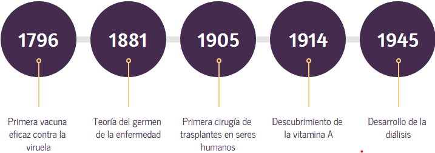
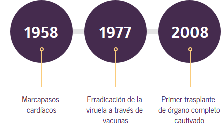
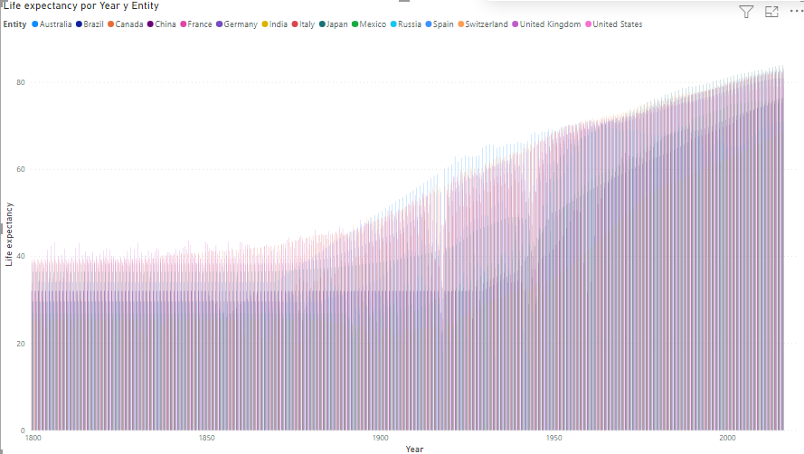

"La medicina es la ciencia de la salud dedicada a la prevención
diagnóstico,pronóstico y tratamiento de las enfermedades
lesiones y problemas de salud de los seres humanos"
Actualmete existe mucha gente que no pone su plena confianza en la medicina convencinal
y a pesar de que existen muchas otras medicinas alternativas funcionales, eso no
significa que sea la resolucion de todos los padecimientos.
Hay gente que prefiere automedicarse, ir a consultas con sus abuelas o ir directamente a
hacerse una limpia. Y a pesar de que esto suene absurdo para muchos de nosotros, es una realidad
que hay un porcentaje importante de poblacion que no lo ve asi.
Seas o no perteneciente a este grupo te invito a leer el articulo que he implementado a continuacion
para que estes informado y reflexiones a cerca de esta situacion.
Antes habia gente que se moria por una simple gripa, antiguamente practicamente cualquier
enfermedad, infeccion o defecto significaba una muerte prematura para el portador, eso hasta
haberse incorporado la medicina a la vida cotidiana, pero no me creas a mi, creele a la historia y a los datos.


Pequena linea temporal de hitos en la medicina
Ahora tomando en cuenta el recurso grafico anterior, con la grafica de la derecha.
Notas alguna coincidencia?
Si no la has notado es que tambien inicia en el 1800 y a partir de ahi los valores no bajan,
solo suben, te imaginas el porque?
Es debido a todos los avances tanto tecnologicos como en el campo de la medicina,
que se arreglan la mayoria de desfectoe en las personas
y se eliminan o controlan las enfermedades.

Ahora una comparacion de los datos de 1800 con los actuales (2016)
Expectativa de vida en 1800
Expectativa de vida en 2016
Como se puede notar antiguamente la calidad de aire y el terreno estaba en mejor estado que ahora
pero aun asi la esperanza de vida no superaba los 40 anios, esto se debe a que como se emnciono
anteriormente, todos los defectos, infecciones y enfermedades cobraban la vida de la poblacion
a muy temprana edad, ahora, en contraste con la epoca de hace 200 anios, se puede notar que la
esperanza de vida poblacional ha alcanzado a incluso superar el 200% de antanio.
Aunque claro no es igual en todo el mundo, ya que existe una brecha muy grande entre diferentes
paises, pero poco a poco eso se va mejorando y eso se puede ver en esta ultima emergencia
sanitaria global que despues de tener vacunada a la mayor cantidad de ciudadanos, las potencias mundiales
han donado sus dosis extras a las zonas con menos posibilidades de adquirirlas por si mismas.
"El objetivo de la medicina es prevenir la enfermedad y prolongar la vida,
el ideal de la medicina es eliminar la necesidad de un médico."